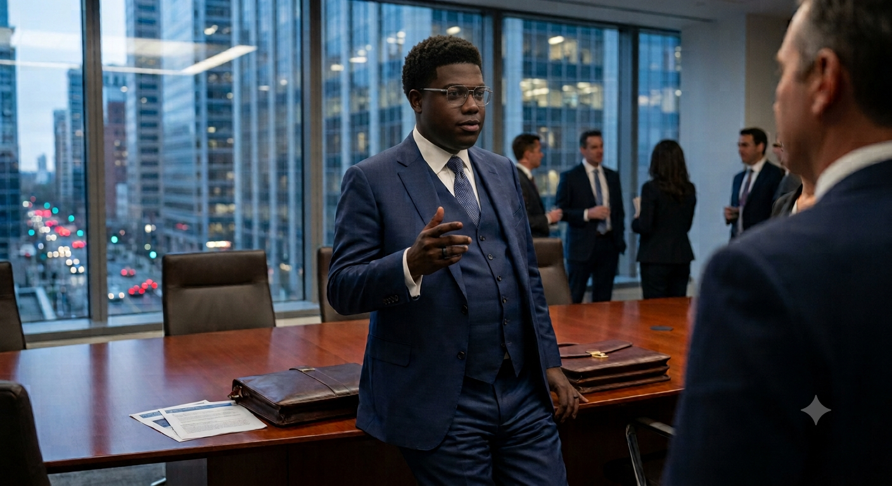
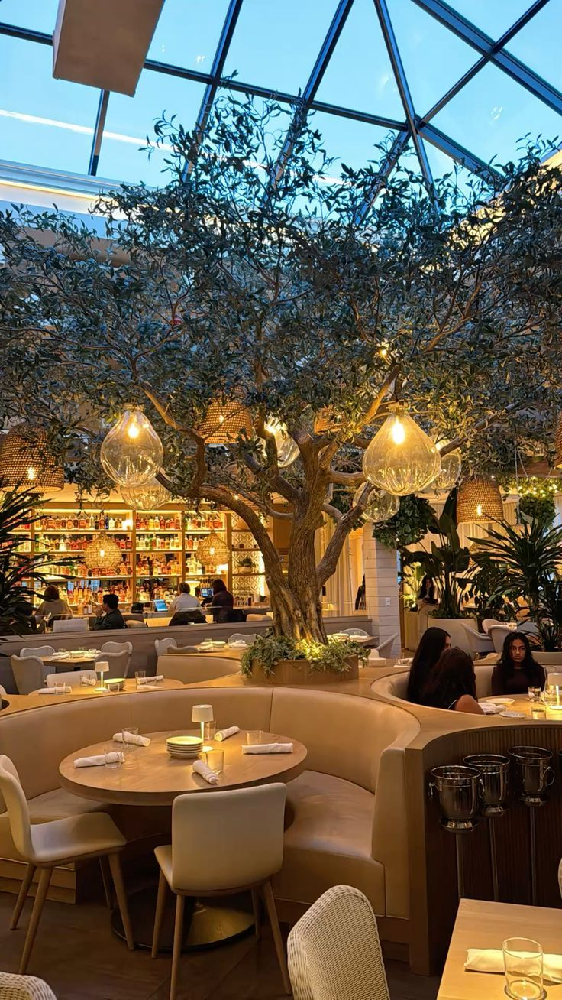
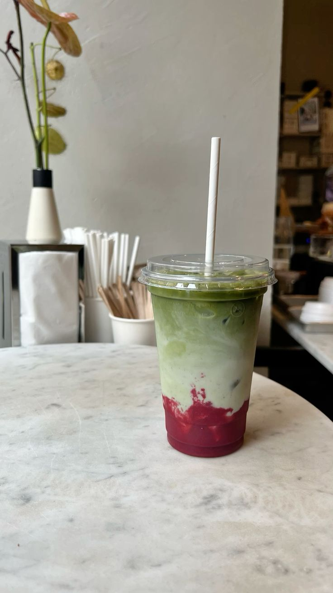
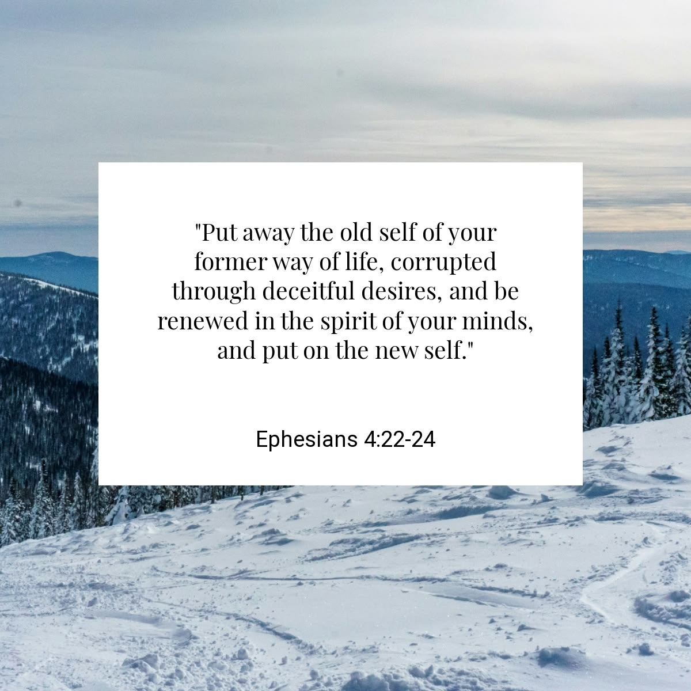

#BuildInPublic
Share your progress and inspire other builders.


@karabo · 2h
“There never was yet a truly great man, that was not at the same time truly virtuous.” –Benjamin Franklin.


@emily · 5h
Honestly , love a good restuarant with a good view and even better food. What irks me is it turns into a groove spot and then the tranquily is gone. Anyway time to find a new favorite restuarant around Sandton. Any suggestions?


@masentle · 8h
Matcha tastes like grass, like honestly its all hype.I would rather just have a caramel latte from starbucks.


@nonku · 10h
My favorite part of the day is when I get home and my son runs to me and hugs me. I love that little guy so much.It makes me feel like I am the most important person in the world to him. I love that feeling.


@dido · 12h
"You cannot change what you refuse to confront." Ephesians 4:22–24 – "Put off your old self... and be renewed in the spirit of your minds."


@beabae · 14h
"Playing fast around the drums is one thing. But to play music, to play with people for others to listen to, that's something else. That's a whole other world


@ennytee · 16h
Does anyone else feel like AI is gonna take their jobs? Personally I'm starting to see the negative side of it. I mean, I get it, it's a tool, but it's also a threat to our livelihoods. Just saying.